| |
Body Types |
| <<< Model Structure | Chapters | Session And Local Precision >>> |
There are three types of body which can be created in Parasolid: manifold bodies, general bodies and compound bodies. This chapter explains the definitions of these different types of bodies, and how they can be created.
There are four stages of manifold body, increasing in topological complexity. These are known as acorn, wire, sheet and solid bodies. The definitions given in this section are the definitions of completely specified bodies of each type. It is possible to make bodies which are not complete geometrically. Such bodies are said to have missing geometry.
Creation of a solid might frequently progress through the body types. Beginning with a minimum or acorn body, scribing lines onto it turns it into a wire body. Closing the profile with a final scribe and adding a surface turns the wire into a sheet. The sheet could then be swept or spun to form a solid. The details of these processes are explained later on in this chapter.
The entities which make up the manifold body types are described in the following sections, along with any restrictions that apply. In addition, note that manifold bodies can be disjoint and need not be connected: void regions can have several shells. See Section 15.3, “Disjoint solids” for more information.
This is the simplest type of body: a body of zero dimensions comprising one or more points in space. If an acorn body has only one point, then it is a minimum body, as described below. If it has several points, then it is disjoint.
An acorn body contains only one type of geometry - points that are attached to the vertices in the body.
A minimum body is a special case of an acorn body that must consist of a single void region with a single shell consisting of a single acorn vertex.
A wire body is one step up from a minimum body - considered to be topologically one-dimensional. Each component in a wire body is a set of connected edges:
A wire body must consist of a single void region, with a single shell for each component. Each shell has one or more wire-frame edges and zero or more vertices (and no faces). Every vertex in the body must be used by exactly one or two of the edges, i.e. there are no acorn vertices.
Given the connectedness constraint, this means that every component in the body is one of:
A sheet body is considered to be topologically two-dimensional. Each component in a sheet body is either open (e.g. a bounded plane) or closed (e.g. a hollow sphere or torus whose walls have zero thickness).
Each component in a sheet body must contain at least one face. A component may be open or closed (bounds a volume, such as a cube created from faces). Sheet bodies may not contain any wire-frame edges or acorn vertices.
Sheet bodies have no solid regions. A sheet body that contains only open components has one infinite void region containing any number of shells, each of which contains a single set of connected faces. For each closed set of connected faces in a sheet body, there is an extra bounded void region representing the interior of the closed set of connected faces.
Every edge in a sheet body must be one of:
Every vertex in a sheet body must either belong to a single isolated loop, or belong to one or more edges. In the latter case, either all the edges of the vertex must be normal and the faces which use those edges must form a single edgewise-connected set (see Figure 15-1), or there can be one ( Figure 15-2) or more ( Figure 15-3) edgewise-connected sets, each of which must involve exactly two laminar edges and any number of normal edges.
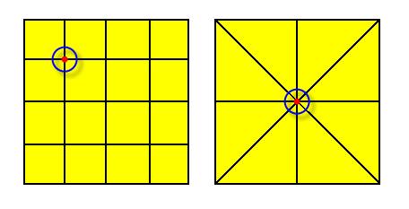Figure 15-1 Vertices in open sheet bodies - one face set, all edges are normal
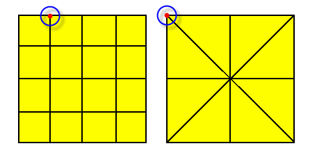Figure 15-2 Vertices in open sheet bodies - one face set, one normal and two laminar edges
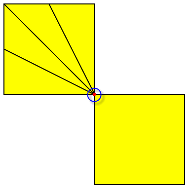Figure 15-3 Valid (non-manifold) vertex in an open sheet body - two face sets
A solid body is three-dimensional, and occupies a finite volume. The volume of each component in a solid body is continuous.
The following restrictions apply to solid bodies:
|
Note: These constraints ensure that the solid is
manifold. |
Disconnected pieces can remain in a single manifold body, facilitating data tracking in a feature modeler. For example, Figure 15-4 shows the result of subtracting a cylinder from a block.
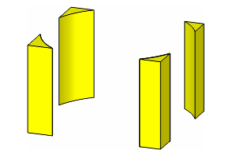Figure 15-4 Solid body consisting of four disconnected pieces
There are four ways to create a manifold body:
When a body of any sort is created, all the other entities which are required (i.e. any necessary faces, edges etc.) are created with it. For example, PK_POINT_make_minimum_body creates a minimum body containing one shell and one vertex with the given point attached.
For an example of this functionality, see the code example in the
C++\Code Examples\Modelling\Body Creation
folder, located in
example_applications
in your Parasolid installation folder.
The primitives are sometimes also referred to as analytic bodies. These functions automatically generate all the topology and geometry required for these bodies.
The PK functions available to create a primitive body are:
The position of the new body is based on the origin, either in the local coordinate system if required, or the world coordinate system.
The world coordinate system is the coordinate system in which the size box is defined:
The local coordinate system is used to define an entity in a convenient coordinate system and then separately show how that entity is positioned and oriented in the world coordinate system.
For example, in its local coordinate system a circle lies in the XY plane, has its centre at (0, 0, 0) and has its parametric seam where the circle crosses the X axis. However, a circle that is part of a model may have any position and orientation in the world coordinate system. PK_CIRCLE_ask returns the circle’s definition in its local coordinate system (just a radius) and a
basis_set
which gives the position and orientation of the local coordinate system in the world coordinate system.
The local coordinate system of a new body is defined by passing an axis to the creating function, using a PK_AXIS2_sf_t structure. This parameter is optional - if supplied as NULL, it defaults to the world coordinate system.
For all spun geometry (circle, cone, cylinder, sphere, torus) the periodic parameterization has its seam on the positive local X axis. Where the surface has any edges, this also applies to the curves attached to those edges.
You can create apple and lemon tori, such as those shown in Figure 15-5, using PK_BODY_create_solid_torus.
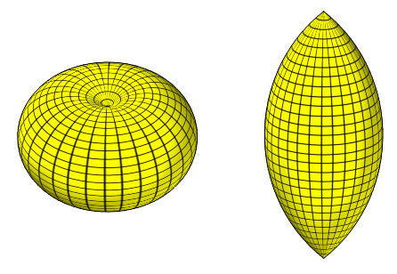Figure 15-5 Apple and lemon tori
To create an apple or lemon torus, the minor radius must be larger in magnitude than the major radius: if the major radius is positive, an apple is created, and if the major radius is negative, a lemon is created.
The PK functions available to create a body from existing geometry are:
While the parameterization of the geometry used to define the body survives, the parameterization of extra geometry that has to be created (e.g. circular edges of cylindrical solids) cannot be predicted.
In addition to the above functions, PK_BODY_create_sheet_planar can be used to create a planar sheet body whose boundary is an irregular polygon, specified by its vertices. Irregular polygonal holes in the sheet body can also be defined.
If there is no existing geometry to copy, the following PK functions are available for creating orphan geometry:
Points, curves, surfaces and lattices created as orphan geometry can also be used to attach construction geometry to a part using PK_PART_add_geoms. PK_PART_ask_geoms returns the geometric entities attached to a part in this way. Dedicated enquiry routines also exist for points, curves, surfaces and lattices. See Section 27.4.1, “Data structure enquiries”, for more information.
This could be used, for example, to create a point which represents the center of gravity of a body, and enable it to be saved with the body.
The following local operations create a body from existing topology:
|
Creates sheet bodies from faces in existing manifold or non-manifold bodies. |
|
|
Creates solid bodies from faces in an existing manifold body. |
A body can be created by taking a copy of another manifold body, using PK_ENTITY_copy_2.
The manifold components of a general body can be extracted into individual manifold bodies using PK_BODY_make_manifold_bodies. This could be used, for example, when a boolean operation has returned a general body containing manifold components.
You can use PK_BODY_copy_topology to copy a body, retaining only the topological entities, so that no geometry from the original body is copied. The function contains options to control tracking information, and to control whether tolerance, attribute, and group information stored with the body should be retained.
The following operations can be used to generate a particular type of body, by operating on a body which is topologically less complex.
These operations are performed by the set of functions PK_<ENTITY>_sweep and PK_<ENTITY>_spin, which change the type of the body. There is a table of the types of object that can be swept and spun in the full descriptions of these functions, in summary:
When a sheet body has been swept or partially spun the entire sheet body is transformed; a negated copy is made, and connected to it by lateral edges and faces. Therefore the original faces, edges, vertices and geometry of the sheet end up in the transformed position.
Figure 15-6 Entity position after sweeping or partially spinning a sheet body
|
Note: Care must be taken with the positioning of the axis when spinning bodies.For example, it is not permitted to spin a wire body through 2pi if an internal vertex rests on the axis as this would result in a non-manifold sheet body. It is also easy to create self-intersecting bodies by sweeping or spinning. Always check the results, either by having local checking on, or using PK_BODY_check on the resulting bodies. For more information about these restrictions, see the description of the spin functions. |
The imprinting functions PK_BODY_imprint_curve, PK_FACE_imprint_curves_2, and PK_REGION_imprint_curve are geometric functions that have two major uses:
These two uses are very similar: in general you imprint curves onto the appropriate entity creating new edges by doing so:
When the profile becomes closed, the behaviour depends on the generalized topology session parameter (see Section 15.7, “General bodies”):
A curve that is imprinted onto a face producing more than one edge implicitly results in the sharing of the curve by the edges. Similarly, an edge that splits a face into two or more pieces results in the surface of the original face being shared by all of the new faces.
PK_BODY_thicken_3 thickens a sheet body into a solid body. Refer to Section 46.5, “Thickening a sheet body”, for further information about thickening.
You can use PK_REGION_make_solid and PK_REGION_make_void to change the type of region in a body. This also has the effect of changing the body type in some cases:
See Section 15.8, “Creating general bodies”, for more information on creating general bodies.
PK_EDGE_make_faces_from_wire can be used to attach rubber faces (faces with no geometry) to loops of wire-frame edges in a wire body, thereby creating a sheet body. This is explained further in the section on Section 45.2, “Creating faces to fit wire bodies”.
PK_FACE_delete_from_sheet can be used to create a solid with holes through it from a profile. For example, if a planar sheet body has closed loops of edges imprinted on it, the edges actually bound faces which have the same surface as the plane. PK_FACE_delete_from_sheet removes a face bounded by a loop of edges, leaving a hole. Then when the sheet is swept, any pierced holes go right through the solid. For example:
If face ‘b’ pierces face ‘a’ before sweeping the result is a solid with a hole:
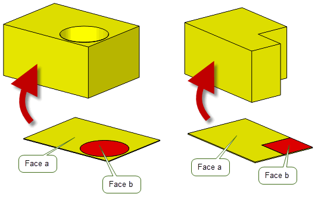Figure 15-7 Piercing a face before sweeping
If the body in Figure 15-7, Example 1 is swept without piercing, the following solid is returned:
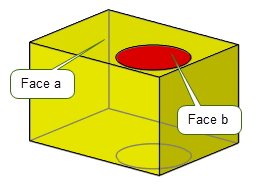Figure 15-8 Sweeping a sheet body without piercing
In Figure 15-8, the two circles on the top and bottom are edges of faces, but there is no hole. If PK_TOPOL_delete_redundant_2 is used on this body the circular faces and edges are deleted.
In the case of a sheet body with only one face, the result of the piercing operation is either a wire or minimum body; with none of the body’s edges and vertices being deleted.
When the body has more than one face, it remains a sheet body after the piercing operation; with edges and vertices belonging to the face, and not shared with other faces, being deleted along with the piercing face.
You can use PK_BODY_set_type to change the type of a body, where the topology of the body allows it. This function receives a body and a requested body type and attempts to convert the body to the requested type.
Only the following conversions are supported:
Depending on the topology of the received body, it may not always be possible to change the type of the body as requested. For example, when converting from a sheet to a solid, PK_BODY_set_type can fail if:
|
Note: Apart from cases where appropriate regions need to be made solid or void, PK_BODY_set_type never changes the topology of the received body in order to perform the conversion. For example when converting from a general to a wire body, it cannot delete faces so as to create a wireframe. |
General bodies are an alternative way of representing models to manifold bodies. In addition to all the manifold body stages, general bodies can contain generalized topology that allows any combination of non-manifold, cellular, or mixed-dimension parts in a single, valid body.
General bodies allow Parasolid to model parts with the following structures, which would be considered invalid when modeling only in manifold terms.
A general body can be formed from a manifold body containing internal partition faces. In Parasolid, internal partition faces are those that divide up regions in bodies, creating a body that has multiple compartments which can be used in different ways. Examples include:
Figure 15-9 General body partitioned by an internal face
In Parasolid, a body is said to be cellular if it meets all of the following criteria:
You can use PK_BODY_is_cellular to query if a given body is a cellular body.
Figure 15-10 shows the difference between sheet, outside, and solid faces that are used to define a cellular body. For more information on the region types used in the image, see Section 15.10.1, “Face and region types”.
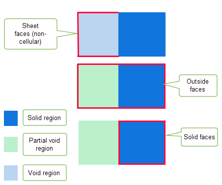Figure 15-10 Illustrating the differences between sheet, outside and solid faces
You can choose whether to allow Parasolid to treat a cellular body as a manifold body using the PK_SESSION_set_cellular_guise function. See Section 15.10, “Treating cellular bodies as manifold bodies” for more information on this functionality.
To enable idealized representations of bodies. For example, a cooling hole in a body may be represented by a wire edge (i.e. no thickness).
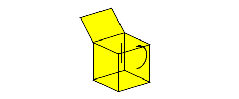Figure 15-11 General body of mixed dimensions
This is a state of modeling that can often be achieved at an intermediate stage, e.g. during a boolean.
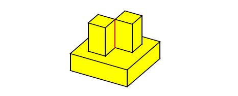Figure 15-12 Non-manifold body
In Figure 15-12 the edge between the two bosses is non-manifold - there are four faces meeting at this edge.
A general body consists of the following.
A general body has one or more regions. These, together with their boundaries, make up the whole of 3-space, and do not overlap. One region in the body is distinguished as the exterior region, which is therefore infinite; all the other regions in a general body are finite.
A general body may have zero or any number of faces. A face is on the boundary of one or two regions; if it is on the boundary of one region only, then the face is a 2-dimensional ‘cut’ subtracted from the region.
A general body may have zero or any number of edges. An edge may be part of the boundary of zero or any number of faces; if it is not part of the boundary of any face, an edge is part of exactly one shell (in which case it is called a wire-frame edge, and is a 1-dimensional ‘cut’ subtracted from the region of which the shell forms part of the boundary).
A general body may have zero or any number of vertices. A vertex may form part of the boundary of zero or any number of edges, and of zero or any number of faces.
If it is not part of the boundary of any edge or face, the vertex forms a single shell. Such a shell can be referred to as an acorn shell, and consists of a single acorn vertex. The acorn shell forms part of the boundary of its region, and therefore represents a single point subtracted from that region.
General bodies may be generated by performing modeling operations on existing manifold or general bodies.
The results of some of these operations depend on whether PK_SESSION_set_general_topology has been called. This may affect the type of the result body, if the operation would cause a body to become, for example, non-manifold or disconnected.
The status of the generalized topology setting is output by PK_SESSION_ask_general_topology.
If generalized topology is enabled in the session, PK_BODY_boolean_2 returns a single general body, unless the
resulting_body_type
option is set to PK_boolean_prefer_simplest_c: see Section 54.4, “Simplifying the result”, for more details.
The resulting body or bodies can be recovered by PK_BODY_make_manifold_bodies. This process is described in detail later in this chapter.
A set of topological entities of an existing body, either manifold or general, can be copied to make a new general body, using PK_TOPOL_make_general_body.
The topology selected can be any combination of regions, faces, edges and vertices, which are copied into the new body along with the attached geometry and associated data. Any new regions or shells required to make the new body valid are also created.
|
Note: If you supply any tolerant edges to PK_TOPOL_make_general_body, the copies of those edges in the new body will have no geometry attached. In such cases, use PK_EDGE_make_wire_body instead. |
A body can be transferred into a void region of another body, thereby creating a disjoint body.
If a body is broken into more than one piece by this function it becomes a disjoint general body.
A disjoint general body can be split into individual bodies. Parasolid automatically determines the appropriate body type for each individual body. Each new body contains a connected point-set of the original body.
|
Note: PK_BODY_disjoin only determines the body type when a disjoint body is received. If given, for example, a single face sheet that is marked as general, PK_BODY_disjoin is unable to change the body type. |
General bodies with only one region and no edges with more than two faces can be swept and spun. The body is copied and the copy is transformed, then new edges and faces are added to connect corresponding vertices and edges.
This function may return a body with generalized topology as the result, if this is allowed in the session.
This function may be used on an interior void of a solid body, in which case the body becomes general.
This function is used to change a solid region into a void region. If the body is disjoint (i.e. it has more than one solid region), then the resulting body is general.
PK_EDGE_make_faces_from_wire can be used to attach rubber faces to loops of wire-frame edges in wire or general bodies. If the body is wire and there are wire-frame edges remaining, then the body becomes general.
If given a manifold body, PK_REGION_embed_lattices will convert it to a general body.
PK_REGION_remove_lattice removes only the lattice embedded in a body and will convert it to a manifold solid body if there are no other general features.
The manifold components of a general body can be extracted into individual manifold bodies using PK_BODY_make_manifold_bodies. This could be used, for example, when a boolean operation has returned a general body containing manifold components. The manifold parts can be recovered so that a greater range of modeling operations can be performed on them.
The general body is split into manifold components as follows:
Figure 15-13 Converting general bodies to manifold bodies
PK_BODY_make_manifold_bodies may create bodies which are topologically manifold, but are not valid for geometric reasons. The following cases show configurations where this might occur.
Figure 15-14 represents a general body with a single solid region, viewed from above. It contains a non-manifold edge where four faces meet.
Figure 15-14 Body with non-manifold edge
If PK_BODY_make_manifold_bodies is passed this body, it creates one manifold solid body, which is:
The result body does not pass PK_BODY_check, returning PK_FACE_state_bad_face_face_c. The application needs to split the body, or perform a modeling operation which edits or removes the offending region, to make the body valid.
|
Note: If
Figure 15-14 represents a
sheet body with a non-manifold vertex, it creates a valid manifold body, as non-manifold vertices are allowed in sheets. |
Figure 15-15 represents a general body with a single solid region, viewed from above. It contains an extra face which cuts into the solid area.
Figure 15-15 Body with face ‘cut’ in solid region
If PK_BODY_make_manifold_bodies is passed this body, it creates one manifold solid body, which is:
Once again, this result body does not pass PK_BODY_check. The application needs to perform a modeling operation which edits or removes the offending faces, to make the body valid.
Alternatively, the extra face could be removed from the original body before extracting the solid body, using PK_FACE_delete_from_gen_body (see the following section, “Deleting entities from general bodies”).
|
Note: If
Figure 15-15 is a
sheet body with an edge cutting into it, it generates a valid manifold sheet body with a wire-frame edge imprinted onto it. |
PK_FACE_delete_from_gen_body can be used to remove unwanted faces from a general body. This function might be used particularly when a general body is to be converted to a manifold body, to prevent:
Figure 15-16 Faces which might be deleted from a general body
PK_EDGE_delete_wireframe can be used to remove unwanted wire-frame edges from a general body.
PK_VERTEX_delete_acorn removes acorn vertices from a general body.
When the topology of a body allows it, you can convert a general body to either a solid, sheet, wire, or acorn body using PK_BODY_set_type. Conversion can only succeed if the general body is topologically manifold. See Section 15.6, “Changing the body type”, for more information.
You can reverse the orientation of any faces in a general body using PK_FACE_reverse. This is a simple way of making a general body topologically manifold if it is non-manifold only because of the orientation of some of its faces.
You can use PK_SESSION_set_cellular_guise to control which of the faces of a general body are visible to the application at any given time. This allows you to present a manifold representation of a cellular body depending on which of the face types are considered visible. See Section 15.10.1, “Face and region types” for more information.
The function takes the following values:
|
Note: When treating a cellular body as a manifold body, all geometric and many topological enquiries will work and return results that are consistent with the manifold view of the model. |
Faces are considered to be outside or solid faces depending on which types of regions they bound. PK_FACE_ask_type and PK_REGION_ask_type can be used to identify faces that fit these categories of faces. For solid faces the region classification can be identified using PK_REGION_is_solid where one region is solid and the other is void.
The following table summarises the face and region material types associated with the different face categories. The information in the two right hand columns is returned by the
material_type
field in both PK_FACE_ask_type and PK_REGION_ask_type respectively.
For more information on the returned
material_type
fields see the respective APIs in the
PK Interface Programming Reference Manual.
|
Note: A body that contains only partial void regions will appear to be an empty body when PK_SESSION_set_cellular_guise is set to PK_cellular_guise_solid_c. |
Figure 15-17 provides a simple illustration of how a cellular body will appear under the different cellular guises. In this example, the cellular body is made of a solid cube and a void cuboid that contains a solid lattice. The regions of the body are separated by an internal partition face. When the cellular guise is set to:
Figure 15-17 Illustrating the different cellular guises
The following describes how to use PK_SESSION_set_cellular_guise_c with cellular bodies.
Throughout the Parasolid session you can switch the cellular guise to any of the values at any time and the selected cellular guise will apply to all bodies in the session.
If a function does not support a manifold view of cellular bodies, one of the following errors is returned:
In addition, some Parasolid functions utilise the Parasolid Report mechanism with a status of PK_REPORT_1_hidden_by_guise_c to return further detailed information that is relevant to a PK call. Details on the additional information returned is documented in each API that returns this report. For more information on the Parasolid Report mechanism, see Chapter 11, “Using Reports”.
|
You can use PK_BODY_identify_general to return the characteristics of a body that require it to be general. This function receives a body and returns a PK_identify_general_r_t structure that lists each general characteristic found in the body, together with the specific topology that is associated with that characteristic. The function may return vertices, edges, faces, or regions, depending on the precise nature of the general characteristic found.
You can attempt to remove any general characteristics using the techniques described in Section 15.9, “Extracting manifold bodies from a general body”.
If no general characteristics are found, simply pass the body to PK_BODY_make_manifold_bodies to set the body to the correct manifold type.
Most Parasolid operations can be performed on bodies containing generalized topology. However, there are some restrictions.
Vertices can be added to edges, faces and regions using the imprinting functions.
Sweeping and Spinning are the only other local operations which can be performed, and they can only be applied to the whole body - individual entities within a general body cannot be swept or spun.
No other local operations work on general bodies.
You can create edge blends on a general body, so long as the portion of the body around the blend is locally manifold. Figure 15-18 shows a number of examples.
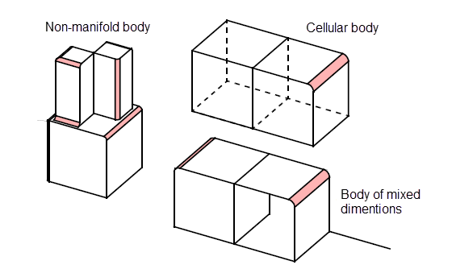Figure 15-18 Blending manifold edges in general bodies
See Chapter 75, “Edge Blending Overview”, for an introduction to Parasolid’s edge blending functionality.
It is not currently possible to create any of the following:
transfer
option in PK_BODY_fix_blends in switched on. See Section 76.3.6, “Preserving overlapped topology”.Figure 15-19 Locally non-manifold regions in which edge blends cannot be created
In addition, a body might look locally manifold, but actually be locally general. For example, the two faces of an edge might be on opposite sides of the shell (i.e. one face a “front” face and the other face a “back” face). In this case the blend will fail.
Even when the region is locally manifold, if, as a result of the particular blend configuration you have chosen, Parasolid has to examine a non-manifold edge, then the blend may still fail.
There are some limitations to the boolean functionality:
|
Note: Limitations which apply to general bodies are described in the documentation of the individual functions where applicable. |
You can apply precision to an edge of a general body using PK_EDGE_set_precision_2. You can set precision on a vertex of a general body using PK_VERTEX_set_precision and optimise it using PK_VERTEX_optimise. See Section 16.3.2, “Setting precision on a vertex”, for more information.
A compound body is a container for “child” bodies that are expected to be related in some way such that they are able to share some physical aspects. Typically, a compound body might be used to collect together different representations of the same part, so that, for example, a sheet and a solid body might be used to represent the pre- and post-thicken stages in the development of a body. Child bodies within a compound body can share geometry where appropriate: a feature that is not available to ordinary bodies in Parasolid (referred to as standard bodies when described in the context of compound bodies).
You should not use compound bodies instead of assemblies. The child bodies in a compound body are typically expected to be in the same physical location, as this helps to optimise the use of shared geometry. Assemblies, on the other hand, are typically used for constructions using separate parts. You cannot use compound bodies within an assembly.
|
Note: Many, but not all, Parasolid APIs support compound bodies, child bodies, or entities from compound or child bodies as received or returned arguments. Those that do not fail with PK_ERROR_compound_body when passed inappropriate entities. A list of supported Parasolid APIs is available in the
PK Interface Programming Reference Manual. |
This section describes how you:
You use PK_BODY_make_compound to create a compound body. This function receives an array of bodies (which must all be in the same partition), and creates a new compound body, with the received bodies as child bodies. Any identical geometry across the child bodies (except for construction geometry) is shared between the bodies.
Identifiers (see Section 2.4.4, “Identifiers”) are modified as required in the resulting child bodies, to ensure that they are unique within the compound body itself. The child bodies themselves are also allocated identifiers so that they can be distinguished in the context of other operations.
To add further bodies to an existing compound body as new children, use PK_BODY_add_to_compound. This function receives an array of bodies, and an existing compound body to which the received bodies are added as children. The array of bodies and the compound body specified must all be in the same partition.
With the exception of construction geometry, Parasolid automatically shares any identical geometry between both the new children and any existing children of the compound body. Figure 15-20 shows an example in which four bodies all use the same surface. Bodies C and D are already part of compound E, and so share the surface, whereas Bodies A and B are not part of a compound body and so share no geometry. After adding Bodies A and B to compound body E using PK_BODY_add_to_compound, all four child bodies share the same surface.
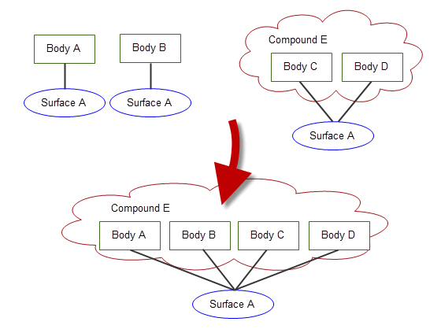Figure 15-20 Shared geometry when adding new children to a compound body
To remove a set of child bodies from their parents, use PK_BODY_remove_from_parents. The received child bodies do not necessarily have to share the same parent.
The received child bodies are converted to standard bodies, and any previously shared geometry is unshared. After the operation, topological entities in the removed child bodies have the same identifiers that they had before they were included as child bodies in a compound.
Groups and construction geometry in the removed child bodies are the same as they were before the child bodies were added to the compound, provided that the compound body has not been modified.
If you want to extract all the child bodies from a given compound body, use PK_BODY_ask_children, and pass the child bodies returned by this function to PK_BODY_remove_from_parents. Doing this leaves an empty compound body with no children, which you can then delete using PK_ENTITY_delete if desired.
You can receive compound bodies into a session by using any of the standard receive functions: PK_PART_receive, PK_PART_receive_u, PK_PART_receive_b, PK_PARTITION_receive, PK_PARTITION_receive_deltas_2.
When receiving a compound body, you can control whether to split the child bodies into standard bodies, receive the compound body as it is, or fail. This lets you choose how to handle compound body information if your application does not fully support compound bodies. You control this behaviour using the
receive_compound
option, which takes the following values:
If
receive_compound
is PK_receive_compound_split_c, and compound bodies are split as a result of the receive, then details about what has been split are recorded in a Parasolid Report of type PK_REPORT_record_type_3_t, with
status
PK_REPORT_3_compound_split_c. The following information is recorded:
See Chapter 11, “Using Reports”, for more information about the Parasolid Report mechanism.
PK_PART_receive and PK_PART_receive_u also support the ability to receive selected child bodies from a single compound body, using the
part_indices
and
identifiers
options, as follows:
In order to receive selected child bodies from an XT file that contains multiple parts, the application that transmitted the file must record the order in which the parts were transmitted, and pass this to the application receiving the part. To receive selected child bodies, the receiving application must then specify the appropriate number for that compound body in
part_indices
, as well as the correct
identifiers
for the requested child bodies themselves.
Note: To receive selected child bodies using these options, you must not set the
transmit_format
to PK_transmit_form_indexio_c. |
In order to transmit a compound body, just call PK_PART_transmit on the compound body. No particular option settings are required in order to make this work.
|
Note: The child bodies in a compound body cannot be transmitted without the parent compound body. However you can extract them and then transmit them as standard bodies. See Section 15.13.1.3, “Extracting compound bodies”. |
Parasolid provides a number of functions specifically designed to return information about compound bodies.
|
Returns the configuration of the received body. A body’s configuration describes whether that body is a compound, child, or standard body. See Section 14.2.1, “Body”, for more information. |
|
|
Returns the compound body that contains the received child body. |
In addition, many of Parasolid’s enquiry functions work correctly with compound bodies. For example, when enquiring about the number of faces in a body (PK_BODY_ask_faces), Parasolid returns results based on the body configuration as follows:
See Chapter 27, “Enquiry And Output Functions”, for more information.
When you create a compound body or add further bodies to an existing compound body as new children, the process of sharing geometry between child bodies requires that identical geometric entities attached to (non-child) bodies are combined when those bodies become children in a compound body, as shown in
Figure 15-20. Sometimes, these geometric entities can have attributes attached. Parasolid lets you control whether or not to combine identical geometries, based on the presence of attached attributes. You do this using the
geom_attr
option in PK_BODY_make_compound and PK_BODY_add_to_compound, which takes the following values:
|
Do not combine geometric entities that have different attributes (either attributes with different attribute definitions or attributes with the same definitions but different contents). Using this value ensures that all attributes attached to geometric entities are preserved (and are therefore, for example, still available if the child body is subsequently extracted by a call to PK_BODY_remove_from_parents). Using this value may result in a larger part file on subsequent transmission of the compound body. (Default) Note: Geometric entities that contain identical attributes are combined. The combined entity retains one of the identical attributes. |
|
|
If geometric entities are combined when the compound body is created, then treat this as a merge event when processing any attributes or attribute callbacks associated with those entities. This may mean that some attribute information is lost. For a full description of the behaviour of merge events in attributes, see Section 96.4.5, “Merge”. |
For more information about attributes, see Chapter 96, “Attributes”.
Existing group information in child bodies is preserved: any groups that are specified in a child body before that body was placed in a compound body will be unchanged when the child is subsequently extracted.
You cannot, however, create groups that include entities that are already in compound bodies.
See Chapter 99, “Groups”, for more information.
When creating a compound body or adding child bodies to a compound body, you can use the
report_shared_geometry
option in PK_BODY_make_compound and PK_BODY_add_to_compound to request that Parasolid produces a report of which geometries have been shared.
By default,
report_shared_geometry
is PK_LOGICAL_false. If set to PK_LOGICAL_true, then information about shared geometry is recorded in a Parasolid Report of type PK_REPORT_record_2_t, with
status
PK_REPORT_2_shared_geometry_c. The following information is recorded:
See Chapter 11, “Using Reports”, for more information about the Parasolid Report mechanism.
| <<< Model Structure | Chapters | Session And Local Precision >>> |